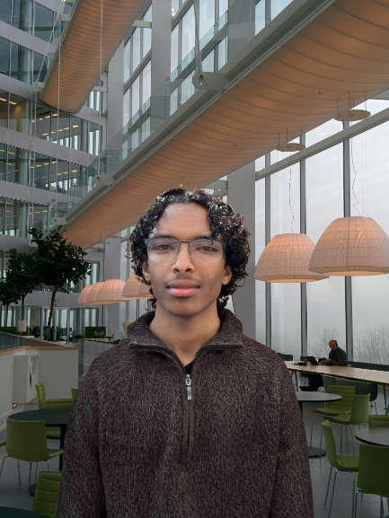

Over mij
Hey, ik ben Saber!
Welkom op mijn website! Je hebt waarschijnlijk al wat over mijn werk en projecten gelezen in mijn portfolio, maar hier vertel ik je graag iets meer over wie ik ben buiten de code.
Wie ben ik?
Ik ben 19 jaar oud en studeer Software Development aan het Koning Willem 1 College. Ik ben leergierig en altijd op zoek naar manieren om mezelf te verbeteren. Naast mijn studie vind ik het belangrijk om me te verdiepen in mijn geloof en mezelf verder te ontwikkelen binnen de islam.
Mijn persoonlijkheid
Ik ben van nature een rustige en kalme jongen. Respect voor anderen staat bij mij hoog in het vaandel, en ik probeer dat ook altijd in mijn gedrag uit te dragen.
Wat mij drijft
Creativiteit speelt een grote rol in mijn leven. Of het nu gaat om fashion, streetwear of muziek – ik vind het belangrijk om mezelf creatief uit te drukken. Mijn favoriete muziekgenre is hiphop,
Bedankt dat je de tijd neemt om mijn site te bekijken. Voel je vrij om contact op te nemen als je meer wilt weten of gewoon even wilt praten!